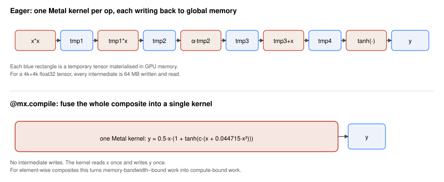
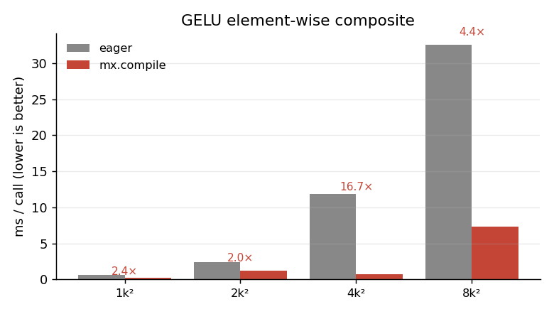
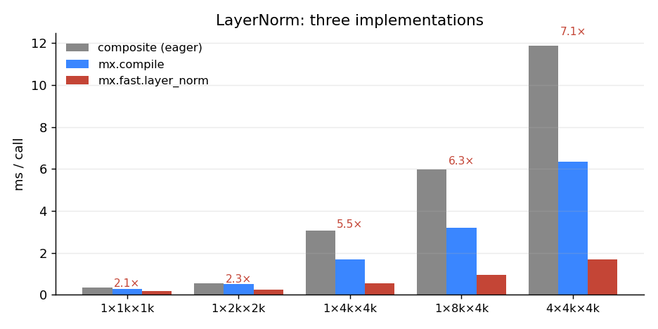
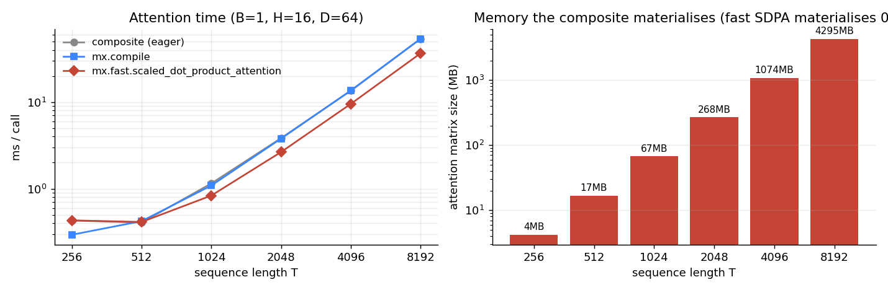
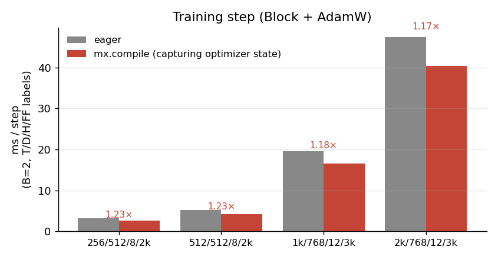

A fused GPU kernel is one Metal program that does the work of several. Instead of op1 writing a temporary tensor to global memory so that op2 can read it back, the compiler stitches the two ops into a single kernel that keeps the value in registers. Less DRAM traffic, fewer kernel launches, less Python overhead.
MLX exposes kernel fusion through three doors. This post opens each one, shows exactly what changes, and measures it on an M2 Max (MLX 0.31.1, macOS 15.5):
mx.compile— automatic graph fusion of any Python function ofmx.arrays.mx.fast.*— handwritten fused kernels for the operations that show up in every transformer:layer_norm,rms_norm,rope,scaled_dot_product_attention.mx.fast.metal_kernel— write the Metal yourself, from a Python string.
Code for every benchmark in this post:
posts/mlx_kernel_fusion/scripts/.
Why fusion matters: bandwidth, not flops
Most element-wise composites in deep learning are memory-bandwidth-bound, not compute-bound. The arithmetic intensity is tiny — you do a couple of FLOPs per element you read. The GPU sits idle waiting for DRAM.
Take GELU’s tanh approximation:
\[\mathrm{GELU}(x) = 0.5\,x\,\bigl(1 + \tanh\bigl(\sqrt{2/\pi}\,(x + 0.044715\,x^3)\bigr)\bigr)\]
Written naively, every sub-expression (x*x, x*x*x, 0.044715*…, x+…, c*…, tanh(…), 1+…, 0.5*x*…) is its own kernel. Each one reads its operands from DRAM and writes its output back. For a 4k×4k float32 tensor, every intermediate is 64 MB of writes you didn’t need.

mx.compile collapses the whole composite into a single kernel that reads x once and writes y once.That picture is the mental model for everything below.
Door #1 — mx.compile: automatic graph fusion
mx.compile takes a Python function of mx.arrays and returns a function with the same signature whose first call records the trace and emits a fused kernel. Subsequent calls dispatch the kernel directly.
import math
import mlx.core as mx
def gelu(x):
c = math.sqrt(2.0 / math.pi)
return 0.5 * x * (1.0 + mx.tanh(c * (x + 0.044715 * x * x * x)))
gelu_compiled = mx.compile(gelu)Functionally identical. Operationally not even close:

The pattern matters more than the exact numbers. Every speedup here comes from avoiding intermediate DRAM writes. The bigger the tensor, the more bandwidth you save. The 4k×4k anomaly (17× vs ~4× elsewhere) is real but fragile — it depends on caches and the specific shape; the trend of large speedups for memory-bound element-wise composites is the load-bearing claim, not any single number.
What compile won’t fuse
mx.compile fuses element-wise ops and reductions into a single kernel. It does not rewrite a matmul or change algorithmic complexity. So a function that’s already one big matmul gets nothing. A function that’s a chain of element-wise ops between two matmuls gets its element-wise tail collapsed into the first matmul’s epilogue or the next op’s prologue.
Capturing state for training
If your function reads or modifies shared state (model parameters, optimizer state, an RNG key), you must declare it via the inputs= and outputs= arguments — otherwise compile sees a stale snapshot.
state = [model.state, opt.state, mx.random.state]
step = mx.compile(step, inputs=state, outputs=state)This is exactly the pattern I use in the training benchmark below.
Door #2 — mx.fast.*: the four fused primitives MLX ships
import mlx.core.fast as F exposes:
F.layer_norm F.rms_norm F.rope F.scaled_dot_product_attention
F.metal_kernel F.cuda_kernel F.precompiled_cuda_kernelThe first four are handwritten fused Metal kernels for the operations that dominate every transformer. They aren’t general — layer_norm knows it’s normalising the last axis, scaled_dot_product_attention knows the softmax is over keys — but inside that scope they beat what either eager or mx.compile can produce, because they exploit reductions, shared memory, and tiling that a generic compiler can’t infer.
LayerNorm — three implementations
def layernorm_composite(x, weight, bias, eps=1e-5):
mean = x.mean(axis=-1, keepdims=True)
var = x.var (axis=-1, keepdims=True)
x_hat = (x - mean) * mx.rsqrt(var + eps)
return x_hat * weight + bias
layernorm_compiled = mx.compile(layernorm_composite)
def layernorm_fast(x, weight, bias, eps=1e-5):
return mx.fast.layer_norm(x, weight, bias, eps)Same maths, three speeds:

mean, var, x-mean, 1/√(var+eps), and so on. mx.compile fuses several of those; mx.fast.layer_norm does the whole thing in one pass with a parallel reduction. The red number above each group is the ratio of composite time to mx.fast time.mx.fast.layer_norm is consistently 2–7× the eager composite, and ~2–4× compile. The gap widens with tensor size — exactly because the composite’s wasted bandwidth scales with the tensor and the fused kernel’s doesn’t.
Attention — the Flash-style fused kernel
Attention is the textbook case. The composite implementation:
def attention_composite(q, k, v, scale):
# q, k, v: (B, H, T, D)
scores = (q * scale) @ k.swapaxes(-1, -2) # (B, H, T, T) -- materialised
weights = mx.softmax(scores, axis=-1) # (B, H, T, T) -- materialised
return weights @ v # (B, H, T, D)For B=1, H=16, T=8192, the scores tensor alone is 4.3 GB. Even before you reach the softmax, you have written and read 4.3 GB of intermediate memory. That is what mx.fast.scaled_dot_product_attention (a Flash-style kernel) avoids: it tiles the computation so the T×T block is computed, used, and discarded inside on-chip memory — never written to DRAM.

The wall-clock speedup looks modest until you reach lengths where the composite simply will not fit. The memory difference is what makes long-context generation possible at all.
rope and rms_norm
mx.fast.rope fuses the rotary position embedding (a small element-wise op that’s nonetheless launched per layer per token in decoding loops); mx.fast.rms_norm does for RMSNorm what layer_norm does for LayerNorm. Same story as above.
Training: how much does this buy in a real step?
The above are micro-benchmarks. A real training step is dominated by matmuls, which are already a single tuned kernel — there is nothing to fuse. The fusion wins live in the non-matmul part: norms, activations, residual adds, the attention surface.
I built a single transformer block (LayerNorm → QKV → SDPA → output proj → LayerNorm → MLP), wired it to AdamW, and benchmarked the per-step time eager vs compiled, with the optimizer state captured properly so the compiled step persists weight updates. Source: bench_train.py.

mx.fast.scaled_dot_product_attention for both eager and compiled — the compile gain comes from fusing the norms, GELU, residual adds, and the optimizer’s element-wise updates into the surrounding compute. ~1.2× across the configs I tried.A 1.2× per-step speedup might not sound dramatic, but it is free: same code, one decorator. Over a 24-hour training run, that is 5 hours of wall-clock back. And it stacks on top of the SDPA fusion, which is doing the heavier lifting silently inside the model.
The non-pattern is also informative: don’t expect compile to magically speed up a matmul-bound network. Profile first; fuse what’s actually on the critical path.
Inference: where the gains are smaller
I expected mx.compile to be a bigger inference win. It mostly isn’t — at least not in the simple “one token at a time, sync after each step” loop. Once mx.fast.scaled_dot_product_attention and matmul are doing the heavy lifting, the rest of a single decode step is small enough that Python and dispatch overhead dominate, and compile’s amortisation has little to chew on:
(layers,B,T,D,H,FF) eager (ms/tok) compiled (ms/tok) speedup
(4, 1, 1, 512, 8, 2048) 0.66 0.64 1.04×
(8, 1, 1, 512, 8, 2048) 1.03 0.94 1.10×
(8, 1, 1, 768, 12, 3072) 1.37 1.31 1.04×
(12, 1, 1, 768, 12, 3072) 1.92 1.83 1.05×The honest framing: inference benefits from MLX’s kernel fusion mostly via mx.fast.scaled_dot_product_attention — that one primitive is what makes the long-context KV-cache scenarios feasible at all (see the 4 GB attention-matrix figure above). The marginal mx.compile gain on top is a few percent.
If you want big inference wins, look at the layer above kernel fusion: KV-cache reuse, batched prefill, and mlx-lm’s prompt processing — none of which this post touches.
Door #3 — mx.fast.metal_kernel: write your own
For everything mx.fast.* doesn’t ship, MLX gives you the escape hatch: define a Metal kernel from a Python source string. Here is element-wise SiLU as a (deliberately tiny) custom kernel:
silu_kernel = mx.fast.metal_kernel(
name="silu_kernel",
input_names=["x"],
output_names=["y"],
source="""
uint tid = thread_position_in_grid.x;
if (tid >= x_shape[0]) return;
float xv = x[tid];
y[tid] = xv / (1.0f + metal::exp(-xv));
""",
)
def silu_metal(x):
flat = x.reshape(-1)
(out,) = silu_kernel(
inputs=[flat],
grid=(flat.size, 1, 1),
threadgroup=(256, 1, 1),
output_shapes=[flat.shape],
output_dtypes=[flat.dtype],
)
return out.reshape(x.shape)Numerical sanity check (max |python − metal| for a random tensor): 2.4e-7 — within float32 noise.
Performance, on three tensor sizes:
shape python (ms) compiled (ms) metal (ms)
1M elements 0.292 0.175 0.200
16M elements 1.098 0.529 0.725
64M elements 4.137 1.679 2.337mx.compile actually wins here over the hand-rolled kernel. That is the important lesson: writing Metal yourself is rarely the right answer for element-wise ops. The compiler does this well already. The escape hatch is for things mx.compile cannot express — multi-stage reductions with shared memory, atomics, custom tiling for a one-off operator the rest of the world doesn’t have.
If you find yourself writing metal_kernel for a stock element-wise composite, try mx.compile first.
A decision tree you can carry around
| If your hot path is… | Reach for… |
|---|---|
| Element-wise composite (activations, norm-without-stats, residual chains) | @mx.compile |
| LayerNorm, RMSNorm, RoPE, attention | mx.fast.* (and let compile fuse around them) |
A reduction or scan that doesn’t fit any mx.fast.* primitive |
mx.fast.metal_kernel |
| A single big matmul | Nothing — it’s already one kernel. Profile first. |
| A whole training step | mx.compile(step, inputs=state, outputs=state) |
What I’d reach for in a transformer today
A dense transformer block in MLX, written for performance, is roughly:
import math
import mlx.core as mx
import mlx.nn as nn
class Block(nn.Module):
def __init__(self, d, n_heads, ff):
super().__init__()
self.ln1 = nn.LayerNorm(d) # uses mx.fast.layer_norm under the hood
self.q = nn.Linear(d, d, bias=False)
self.k = nn.Linear(d, d, bias=False)
self.v = nn.Linear(d, d, bias=False)
self.o = nn.Linear(d, d, bias=False)
self.ln2 = nn.LayerNorm(d)
self.ff1 = nn.Linear(d, ff)
self.ff2 = nn.Linear(ff, d)
self.n_heads, self.d_head = n_heads, d // n_heads
self.scale = 1.0 / math.sqrt(self.d_head)
def __call__(self, x):
B, T, D = x.shape
h = self.ln1(x)
q = self.q(h).reshape(B, T, self.n_heads, self.d_head).swapaxes(1, 2)
k = self.k(h).reshape(B, T, self.n_heads, self.d_head).swapaxes(1, 2)
v = self.v(h).reshape(B, T, self.n_heads, self.d_head).swapaxes(1, 2)
a = mx.fast.scaled_dot_product_attention(q, k, v, scale=self.scale)
a = a.swapaxes(1, 2).reshape(B, T, D)
x = x + self.o(a)
x = x + self.ff2(nn.gelu(self.ff1(self.ln2(x))))
return xnn.LayerNorm calls mx.fast.layer_norm. mx.fast.scaled_dot_product_attention is the attention. Wrap the training step in mx.compile(step, inputs=state, outputs=state) to fuse the rest. That is the whole story — three primitives doing the heavy lifting, one decorator stitching the leftovers.
Caveats
- Numbers above are M2 Max, MLX 0.31.1. The shape of the wins generalises; the magnitudes will move on different hardware (M3/M4 Pro/Max) and as MLX’s fast paths evolve.
- Compile-related pitfalls: avoid Python control flow that depends on the values of inputs (only on shapes/dtypes); declare
inputs=/outputs=for any captured state; recompile on shape change unless you passshapeless=True. - These are micro-benchmarks. Real training/inference also pays for data loading, host-device sync, prefill vs decode asymmetries, KV cache management, and so on. Kernel fusion is one layer in a stack.
Links
- MLX: github.com/ml-explore/mlx · docs.mlx.dev
mx.compilereference:mx.compilemx.fastnamespace:mx.fast- Custom Metal kernels:
mx.fast.metal_kernel